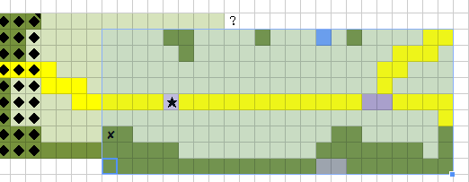
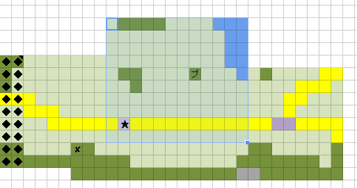
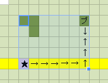
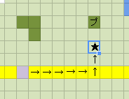

0. 準備
1. クリンの村
ドMなメリーPL
さて、今は村に到着しています！
メリーが施設について分かったので、だいたいの施設はGMが教えてくれるはずです！
エッチなGM
では時刻は19：20ですが、20分はちょっと邪魔なので19時とします
エッチなGM
●鍛冶屋【アイアムタタキ】
元値300sまでの武具購入。
・安売り中！ → ロングスピア？(500s)
●雑貨屋【アイアムアイテム】
元値300sまでのアイテム購入。
・売っている： この辺の地図（150s）
●市場【みどりの指】
キャベツ売ってる。
●宿屋【掃除屋】
ファズマリから逃げてきた人が1Fで休んでいる。
蛮族依頼を出した人もここに避難しているようだ。
一応、1人10sで2Fの部屋に泊まれる。食事はサービス。
●掲示板
依頼がある。
エッチなGM
・・・で、セッション前に決めてくれた予定でやるのかな？
けだるいレープレPL
セリフとかで宣言しないとだよね
普通のラオグPL
あー、追加で雑貨屋で材料買う前にみどりの指でブラブラしようかと
普通の鈴雷PL
はい、鈴雷は雑貨屋に行きますよー
「よし、街についたし材料買えばようやく物作りできるわ。私雑貨屋に買いに行ってくるっ」 キョロキョロ街みつつ左右にトテポテ
ドMなメリー
「とりあえず、荷物が重いから売りたいよね」
ドMなメリー
「戦利品を持っている人は鍛冶屋に売って、武具を売るとかどう？」
普通のラオグ
「メリーは今持ってる分に、更に俺が持ってる分もあるからなー・・・整理しとけよ？」
強そうなウタコ
「あーそうですね。でもこの剣壊れかけてるけど大丈夫かなあ？」
けだるいレープレ
「ほえー。 なんかみんな大変そうだね。 がんばって」
凄く硬いシル
「あれって全部売るんだ？壊れかけって売れるのかな……」
最強のスクサファ
「じゃあ、僕もこの携帯弓売って雑貨店かなぁ・・・？」
ドMなメリー
「多すぎるから全部は売れないだろうと思うけど、次の街ではお店が違うから売れると思うよ」
ベーグルﾊｧﾊｧなジウベPL
（少しだけ時間ができたので出現します）
ドMなメリーPL
（ジウベさんは安売りロングスピアの鑑定係でいいと思う？）
けだるいレープレPL
（鑑定してもらいたいなら そうして貰えばいいと思う）
ベーグルﾊｧﾊｧなジウベPL
（鑑定するならしますぜ！今のうちにね）
けだるいレープレ
「さて。 オイラ暇だな～・・・。 どうしようかな」
普通のラオグ
「俺はちょっとブラブラしてくぜ～」 と言ってキャベツいっぱいの市場、『みどりの指』に向かいます。
凄く硬いシル
「そうなんだ。おねだりしたら、高く売ってもらえたりするのかな…」
ドMなメリー
「レープレくんは依頼でも見にいったら？」
「で、戦利品を持ってる人は僕にウタコちゃん、スクサファくん、ジウベくんだね。交渉できそうなシルくんで五人で売りに行く？」
強そうなウタコ
「じゃあ売りに行きますかー。 ・・・このショートソード売れなかったら私が装備しちゃおうかなー・・・」とか【壊】ショートブレイドを取り出して眺めてよう
ドMなメリーPL
（成長記録の右下に変なものがあったんだけどォーーーーーーー）
強そうなウタコPL
（そーいえば【壊】【３火炎】ロングブレイドどうすんだっけ）
ベーグルﾊｧﾊｧなジウベ
「そうだな・・・・もし金になりそうなら売って損はしないかもだな・・・ベーグル。お前もくるかー？」（ベーグルだっこ
けだるいレープレ
「依頼・・・？ そっか、依頼か。 ・・・じゃあ掲示板とかかな。 ・・・行ってくるよ」 （レープレは掲示板へ向かいます）
強そうなウタコPL
（壊れそうな酸化塩ロングブレイドって誰か装備する予定だったっけ？）
強そうなウタコPL
（やべえなんか化学の授業で出てきそうなロングブレイドになったぞ）
けだるいレープレPL
（すみません、 明日の出発の準備でちょっとの間ロール反応薄くなります）
ドMなメリー
「あと、ジウベくんが鑑定したその長剣は誰が持つ？」
強そうなウタコ
「これねー・・・」とか 【壊】【火炎３】ロングブレイドを取り出そう
強そうなウタコPL
（ロングブレイドどうしよ、渡すなら今のうちか？）
普通の鈴雷PL
（ロングは取っておいて使う人が修理材料買うのがいいとは思うが）
強そうなウタコPL
（あーその方がいいかー 結局誰持つのかわかんないけどｗ）
普通の鈴雷PL
（今使うって人いないなら売ってもいいと思うから使いたいなら積極的に言うべき！）
普通のラオグ
ちょっと経ってラオグが駆け足で戻ってきます。「ああそうだ、忘れてた・・・！なあ鈴雷、この盾のをあとで修理してくんねえか？部品も必要だろうし、それも頼む！」
エッチなGM
（雑貨屋鍛冶屋はお隣なので間違っても問題ない）
普通のラオグPL
（なんだ、隣なのね。ってキャベツ市場に行くから別行動じゃん！）
普通の鈴雷
「ん、わかったわ雑貨行ったら覗いとく。修理部品は後で払ってくれればいいから宿で払ってねー」
普通の鈴雷
んじゃ鈴雷はラオグに頼まれたのも買うためにさっき行った通りまず雑貨屋に
普通のラオグ
ラオグは気分転換に（もといイベント探しに）みどりの指へ
ベーグルﾊｧﾊｧなジウベ
ジウベは鍛冶屋でかんていします
ドMなメリー
「懐かしいような感じがするなー・・・」（呟きながら鍛冶屋へ行く）
ドMなメリー
シルとスクが鍛冶屋に行けば鍛冶屋組は揃う！
普通のラオグ
（みどりの指行ってから雑貨屋行って閃光弾の材料ゲットするぜ！）
エッチなGM
シルちゃんはメリーちゃんに言われて鍛冶屋行く形のはず！一応ビルビスも連れて行くことにしましょう
エッチなGM
ちょっと焦った あ、売却はどこでも出来ますよー
強そうなウタコPL
（あれ修理材料ってドコ載ってるっけ）
エッチなGM
ただしシルちゃん鍛冶屋行きなので交渉はできない
普通の鈴雷PL
（修理材料は大元の武器防具の買値の10分の一）
ドMなメリーPL
あ、スクサファPLさんが退出した・・・？どうしよう、何のために雑貨屋に行きたかったんだろう？
けだるいレープレPL
（よし、準備ある程度終わったので復帰！！）
エッチなGM
ただ、日が落ちているのでもう人はあまりいない
普通のラオグPL
市場の様子はどうでしょうか。珍しいものはありそうですか？
エッチなGM
では市場で売っているのはキャベツしかないと分かりました
ドMなメリーPL
（キャベツ専門店・・・やべー行きたい。けど重い）
普通のラオグ
「ほえー、あたり一面緑だらけ！すげぇなー」
ドMなメリーPL
1d8って言った方がわかりやすいかも
エッチなGM
5シルバ ですね 買うのかは知らない（
普通のラオグ
「んー・・・でも、キャベツ買ってもなー・・・俺料理しないし。」
普通の鈴雷PL
効果とかは全く分かりそうにない？（保存食扱い等
強そうなウタコPL
（料理に上方修正とかなのかしら）
普通のラオグ
では、特に小さいのを1個買ってムシャムシャ食べます。
エッチなGM
他にやることなければ、鍛冶屋にシーン写します
けだるいレープレPL
ライオンなのに草食系男子だった
普通のラオグPL
（ついでに、味はどんな感じだったでしょうか？）
ドMなメリーPL
（おおー、さすが村と言ったところか）
普通のラオグ
「おお、結構甘いのな。そのままでも美味いぜ。」
強そうなウタコPL
（ダイスかー・・・ファンブルだと中から青虫が・・・！）
さて鍛冶屋（←
エッチなGM
では、鍛冶屋です 鈴雷は修理部品を雑貨屋で買おうとするけど「あっち！」って言われて結局鍛冶屋に行くことになるはず
エッチなGM
スク君は多分雑貨屋で薬買うんだろうなあ
エッチなGM
では、買うもの・売るものは！ その前にロングスピア鑑定するの？
普通の鈴雷PL
ではまず雑貨屋で売り買いするものを
閃光弾19を一つ売却（180s） 合計440s
その後地図（150s）と閃光薬+火薬を3つ購入（240s） で残り５０s
エッチなGM
ほいほい シートへの反映は各自やってくれー（後でチェックする）
普通の鈴雷PL
その後あっち言われて「あ、そうなんだありがと！」といって鍛冶屋に向かいます
（鍛冶屋面子にパス）
ドMなメリーPL
とりあえず、壊ショートブレイドをまとめて4本、チェインクロスは4個ですね！価格交渉で売る？
強そうなウタコPL
自分も壊ショートブレイドにチェインクロス４着を売るかなあ
けだるいレープレPL
（お知らせ： スクサファPLさん携帯電池切れで死んだらしい）
ベーグルﾊｧﾊｧなジウベPL
鑑定はしてもいいですよー
ドMなメリーPL
ジウベは鑑定！ 壊ショートブレイドは売る？
ベーグルﾊｧﾊｧなジウベPL
うーん今回は売りません！
ドMなメリーPL
はーい！ じゃあ、鑑定ロールと売るロールをします！
普通の鈴雷PL
（弓だけ売って何買いたいのかわからないから後で購入した判定でアイテム売り買いしてもらうか；）
普通のラオグPL
（あれ、ジウベは鑑定か。価格交渉誰だ？）
エッチなGM
お預かりの壊れかけショートブレイドは売らないのかな？
エッチなGM
交渉はシルちゃんががんばろうとしている
ドMなメリー
「ショートブレイド4本に、チェインクロスが4着だね。どれくらい売る？」
ドMなメリーPL
（ラオグはチェインクロスほしそうにしてたね）
普通のラオグPL
（じゃあシルちゃんの意見で、価格交渉賛成）
普通のラオグPL
（まだ着れないけどね。すぐにライトプレートあたりにするつもりだから、売ってもいいよ。）
ドMなメリーPL
（発言はしたから、鍛冶屋組ロールお願い）
ベーグルﾊｧﾊｧなジウベPL
何を鑑定すればいいんですかね
ドMなメリーPL
安売りされているロングスピアですね
エッチなGM
安売りされているロングスピアが「？」なので要鑑定ですね
ベーグルﾊｧﾊｧなジウベPL
おっしじゃあそれに鑑定しますね
ベーグルﾊｧﾊｧなジウベ
2D6 [1,2] + 4 = 7
ベーグルﾊｧﾊｧなジウベ
そうか・・・プチ使います！
エッチなGM
では振りなおしてくれ！（回数へらしておいて！）
ベーグルﾊｧﾊｧなジウベ
2D6 [2,6] + 4 = 12
エッチなGM
ではロングスピアが何であるかわかりますが
ベーグルﾊｧﾊｧなジウベPL
1D6 [4] = 4
ドMなメリーPL
（あー・・・またプチが欲しくなるやつだ）
ベーグルﾊｧﾊｧなジウベPL
（ただのって事はよくもわるくもない感じで（？
ベーグルﾊｧﾊｧなジウベ
「ふむ・・・見たところ。市場に出回っているごくふつーーーの品物だな。」
ドMなメリー
「ふーん。じゃあ買わないでおこうかな」
強そうなウタコ
「とりあえずショートブレイドとチェインクロス売っちゃおうかなあ？ あ、おっちゃんロングブレイドの修理材料売ってるー？」とか自分の持ち物ごそごそしながら
ドMなメリーPL
（プチ使わせてごめんなさい。ロール終わったら売るタイム！）
ベーグルﾊｧﾊｧなジウベPL
（いえいえ！自分そろそろ時間なんでいったん離脱します
ドMなメリーPL
まず売るのは、壊ショートブレイド4本と壊チェインクロス4着でいいよね？
エッチなGM
ですね 携帯弓はスク君持ってっちゃったし
凄く硬いシル
「高くしてもらえるようにお願いしてみるよ！」
エッチなGM
目標値はショートは【8】、チェインクロスは【10】！
凄く硬いシル
MP10->8 「おねがい！僕おかね無いんだ！」
ショートの場合 : 2D6 [2,4] + 5 = 11
クロスの場合 : 2D6 [3,4] + 5 = 12
エッチなGM
（スキルの仕様上目標値は実際+2なんだよな……）
エッチなGM
壊ショートブレイドは68シルバ
壊チェインクロスは165シルバ で買ってもいいよ、ってお店の人が言ってくれます
エッチなGM
合計272+660＝932シルバで売れます
普通の鈴雷
「よかったじゃない」 ひょっこり入口から反応
エッチなGM
もし売るならば、（ビルビスに分けないならば）一人あたり103シルバで余りは5シルバです！
普通の鈴雷
「資金にしたほうがいいでしょ。かさばるし」
エッチなGM
反対ないならば売却で そのまま金額分けるでいいですかー？
強そうなウタコ
反対する理由は無いなあ。
「売っちゃいますかー。」 チェインクロスを４着抱えて鍛冶屋のおっちゃんに「これお願いー」とか渡しておこう。
エッチなGM
ではみなさんアイテムとお金をシートに反映お願いしますー！
けだるいレープレPL
（別行動勢もこのタイミングで増やすの？）
エッチなGM
（あとで渡す、という形になりますが増やしても良いです）
けだるいレープレPL
（レープレとか完全に別行動だからね。 あとから渡してもらう形になるわけだけど そしたらそんときがよくないかい？）
強そうなウタコ
350 103⇒453ｓ +持ち物のチェインクロス&ショートブレイド消去
普通の鈴雷PL
（処理忘れないなら後ででも問題ないけどどうすっぺ）
エッチなGM
（購入フェイズがないなら忘れないうちに増やしたほうが良いかと）
けだるいレープレPL
（んー。 まぁ今宣言だけしときますわ）
エッチなGM
何もなければ余りのシルバはジウちゃんに渡します
けだるいレープレ
レープレ所持金
435s → 538s
強そうなウタコ
「・・・あそうだおっちゃん！ロングブレイドの修理材料売ってるかな？」とか会話しつつ修理材料（元の十分の一だから50ｓかな？）を買うー。
強そうなウタコ
453⇒383 で、ロングブレイド修理材料 か。
普通の鈴雷
「あ、私もー！すけい、助？・・・スケイルシールドの修理材料欲しい！」 ぴょんぴょんとカウンターから見え隠れする姿が（
スケイルシールドの修理部品（50s）を購入 残り103s
「お金に相変わらず余裕がないわね…これは全員で使うものは割り勘にする必要ありね、うん。結果的に精神薬も奢ったし考えないと（」
強そうなウタコPL
（残った5sでキャベツ買えるかなｗ）
けだるいレープレ
「えーっと。 掲示板・・・掲示板っと」 （ｷｮﾛｷｮﾛﾃｸﾃｸ
けだるいレープレ
「えっと？ 洞窟の調査・・・ふーん」
けだるいレープレPL
その 掲示板のやつで それについてほかはなんかわかります？
エッチなGM
概要としては、
地図を書いて貰い、それを報酬のシルバと交換する形のようです
けだるいレープレPL
なるほど。 とりあえず受けるならその依頼主のところ行かないといけないよね。
普通のラオグPL
（もうすぐ闇に飲まれるというのに、地図なんて意味があるのだろうか・・・）
普通の鈴雷PL
（それマッピング所持者の前で同じこと言えるの？（サバンナ的なノリで）
エッチなGM
依頼主の場所が書かれていますが、宿屋の2階の部屋z号室と書いてあります
けだるいレープレPL
了解、そこまでわかればあとは伝えるだけだね
けだるいレープレ
「ふむ。なるほどー。 とりあえず、皆にコレ伝えてみよっかな。 あ、でも興味示すかな・・・」 （ﾌﾞﾂﾌﾞﾂ
けだるいレープレ
「・・・あ、どこに集まるのかとか聞いてなかったや。 ・・・どうしよ、とりあえず宿屋に行けばいっかな」 （とか言いながら宿屋向かいます
ドMなメリーPL
じゃあ、何もなければ宿屋へ行くロールと合流を
普通のラオグPL
キャベツ片手に村をブラブラしているラオグですが、今度は雑貨屋の前に立ち寄ります。
普通のラオグPL
雑貨屋の看板を少し眺めてると、「（ピン！）」と何かを思い出しました。
エッチなGM
「アイアムアイテム」を眺めると思い出すの図（お店の名前）
普通のラオグ
「（鈴雷の作ってた・・・センコウダン？・・・の材料ってここで買えるのかな。寄ってみよう。）」
エッチなGM
ミニ閃光弾の材料は80シルバで売ってます
普通のラオグPL
店番してる人はおっちゃんでしょうか？
エッチなGM
1：おっちゃん 2：おねえさん : 1D2 [1] = 1
普通のラオグ
では店の中に入り、「おっちゃーん、センコウダンの材料売ってくれー」と発言。
エッチなGM
アイアムアイテムのおっちゃん「私はそれを合計240シルバで売ってあげるぞ」
普通のラオグ
「おう、わかった！これで足りるか？」と財布代わりの袋から代金を適当に出します。
普通の鈴雷PL
（そういや蛮族ドロップから地図代出してもらおうと思ってのだが分配終わってから思い出したw）
エッチなGM
では240ｓと引き換えに材料を渡します
エッチなGM
アイアムアイテムのおっちゃん「また来たまえ……」
普通のラオグ
「あんがとよー」 店を後にします。 所持金433ｓ＞193ｓ
ドMなメリーPL
さて、みんな宿屋に移動したのかな？
エッチなGM
幸いにも皆ほぼ同じタイミングで宿屋に着いたことにします
強そうなウタコPL
みんなでわいわい宿屋の前で話し合ってさあ中へな感じか
普通の鈴雷
「あ、皆いるわねー地図買ってきてあげたわよー感謝なさーいっ 奢りじゃないけどね！」
エッチなGM
あ、地図買ってるならMapに反映しておきますね
エッチなGM
（Mapに購入した地図の部分を追加しました）
※このときに見せた地図 青枠部分が追加されました

★：現在地 ◆：闇
強そうなウタコ
「合流出来ましたねー ・・・あそうだりんらいさん、中に入ってからでも修理頼めますかー？」
普通の鈴雷
「いいわよー修理部品代はそっち持ちならっ」
強そうなウタコ
「こんな事もあろうかと買ってきましたっ！って事でお願いしますねっ！」
けだるいレープレ
「えーっと。 掲示板に貼ってあった依頼とか、興味ある？」
ドMなメリー
「掲示板に貼ってあった依頼？聞いてみたいかもね」
普通のラオグ
「俺の盾も頼むよー」と鈴雷に呼びかけ。
普通の鈴雷
「はいはい。修理費は50sだったからあとで払ってねー」
普通のラオグPL
（今のうちに修理代50ｓ減らしときますね） 所持金193ｓ＞143ｓ
けだるいレープレ
「んー。興味ある人がいたらいいけど。 かくかくしかじか（←依頼内容を話す）みたいなやつなんだけど」
普通の鈴雷PL
鈴雷 修理代渡してもらい 103s→153s
ドMなメリー
「地図を作るなら、僕がある程度できると思うよ。いいと思うけど、みんなはどう？」
強そうなウタコPL
（あ、じゃあ今のうちに【壊火炎３】ロングブレイドとロングブレイド修理材料渡しておきます）
普通のラオグ
「地図はよくわかんねえから任せるけど、何かあった時のためについていくぜ。」
普通の鈴雷
「何かいるかもだし戦えるようにしていかないとね」
強そうなウタコ
「確かに戦えるようにしておきたいですね。・・・にしても洞窟かぁ、ちょっと怖いなあ」
けだるいレープレ
「なんか、みんな興味あるみたいだね。 依頼人さんこの宿にいるみたいだから、みんなよければ訪ねてみよ」
強そうなウタコ
「っと、だったら今のうちにこれ（壊火炎３ロンソ+ロンソ修理材料）渡してもいいー？」とりんらいちゃんに
普通の鈴雷
「いいわよー。それじゃあ依頼とやら聞きに行って終わったら修理ね」
強そうなウタコ
「おねがいー っと、じゃあ宿屋いこっかー」
2. 依頼
エッチなGM
反対無いなら―― まずこれを先にやる
1階で休んでる人に、蛮族の依頼を出した人が居ます
エッチなGM
（依頼人の特徴等はヒショさんに教えてもらったからすぐに解ったことにしますね）
依頼人A
「お、君たち旅人は… あの女の人が言っていた、蛮族の依頼を代わりに受けた人たちかな？」
と皆さんを見て言います
ドMなメリー
「そうだよー。証拠って誰が持ってたっけ？」
普通のラオグ
「・・・（あー、嫌なこと思い出した）」 ずっこけた件です。
エッチなGM
（そういえばすっぽかした所だったな 誰かが持ってることになってる）
普通の鈴雷PL
（私持ってたことにしてもいいかな？）
普通の鈴雷
「それならご心配なくっ！しっかりここに・・・」 ｽﾞｽﾞｽﾞｽﾞｽﾞと尻尾の中から物品が出現
普通のラオグPL
（ってことにしといてもいいよね！ちょうどウタコから渡されてたし！）
強そうなウタコPL
（ズズズがズププに見えた病気か）
普通の鈴雷PL
（鈴雷が隠れるほど尾は大きいのだっ）
依頼人A
「おお、その様子だと目標の蛮族は潰しに行けたようだな…
奴の剣は恐ろしかったはずだ……、ひとまずこれが報酬だ」
皆さんは一人あたり300s渡されます！
ドMなメリーPL
メリー所持金503→803シルバ 「依頼人さん、ありがとー」
普通のラオグ
「おー、ありがてぇ！」 所持金 143ｓ＞443ｓ
普通の鈴雷
「ふふ、結構いい収入ねw」 153s→453s
強そうなウタコ
383⇒683ｓ 「ありがとうございます！」
依頼人A
「この先の街までに蛮族は居ないようだ。
ただもしまた野営地を見かけたならば潰しておいてくれ。人々があの闇から逃げる間に族に襲われるのは困るだろう」
ドMなメリー
「じゃあ、Aさんも頑張ってねー」（手を振る）
エッチなGM
この後、2階に行って掲示板の依頼受けに行く形になりますね
普通のラオグ
「（早く休みたい・・・が、お楽しみがあるんだよなー今日は）」
エッチなGM
ビルビスは一階の人々を見て、「うーむ、どうやらここには私の兵士達は居ないようか…」と言ってます
けだるいレープレ
「・・・えっと、じゃあみんな案内するね」 （2階のほうに登って
「この部屋だよ。 （ノックして） こんばんわー、誰かいるー？」
エッチなGM
では入ると依頼人Bが居ますね「おお、もしかすると掲示板を見てくれた人か？」
けだるいレープレ
「そうそう。 詳しい話を聞かせて欲しいんだけど・・・、 この人数で大丈夫かな （後ろを指差して）」
依頼人B
「いや、多いほうがいい 何故か分かるか？俺1人じゃ無理だと分かったからだ！」
普通の鈴雷
「……なんで自信満々というか勢いよく宣言してんのよそこ」
けだるいレープレPL
（部屋の中にゾロゾロと９人入ってくる図を想像してた）
依頼人B
「あの洞窟にゃおっかねえのが居るから近づいたことすらなかったんだ。
でも俺は冒険が好きだったのでな、仲間がいなくなっちまった今じゃもう殆どやっとらんが。そんときにあのでっけえ闇が来ちまったからもうあの洞窟には入れそうもなくなるだろうな。」
依頼人B
「だから二度と入れなくなる前に、どんな奴があったとか知りたいんだ。やってくれるよな？
作った地図は高く買い取ってやる！あと手に入れたもんは持ってっていいからな」
普通のラオグ
「（危険そうだがオイシイ話だな。受けるか・・・？）」
普通の鈴雷
「へー内容はアレだけど条件は悪くないんじゃない？（本人の前で言うべきでない事を本人には聞こえないようにﾎﾞｿﾎﾞｿ」 メリーさんの肩に乗っかりつつ
けだるいレープレ
「なるほどー。 えっと、とりあえず依頼人さんに渡すのは作った地図だけでいいんだね。」
ドMなメリー
「うん・・・恨み、だよね」（恍惚の表情でぼそぼそと）
依頼人B
「そうだ、地図だけでいい、いくら出すかは……クオリティ次第だな！」
ドMなメリー
「質次第かー。地図作りも勉強しないとね」
けだるいレープレ
「・・・ま、オイラだけの意見じゃどうにもできないわけで。 みんなどうしよっか」
普通の鈴雷
「いいと思うわよっ。物作りとはいえ地図は専門外ねーメリーふぁいと～」 肩車状態でもふもふ
普通のラオグ
「俺さんせーい。そのおっかねーってのと戦ってみたいぜ！」
ドMなメリー
「ちょっと、やめてよー」（もふもふされて嬉しそう）
依頼人B
「よし、じゃあ良い報告を待ってるぜ
・・・おっと、その洞窟の場所わからんとどうしようもないよな」
といって洞窟のある場所を示す地図をもらいます
※このときに見せた地図 青枠部分が追加されました

★：現在地 ◆：闇
エッチなGM
MAPに反映しました 「プ」って書いてあるのがその洞窟です
けだるいレープレPL
それとも 依頼人も次の街に移動する感じ？
ドMなメリーPL
依頼人が闇に飲まれる訳にはいかんだろー
依頼人B
「しばらくはこの村にとどまるけどな、3日経ったらさすがにここにゃ居られんだろうな
そんときは次の街の宿で待ってるぜ」
普通の鈴雷
「んじゃまた街道で近くまで行って闇との位置で行くか相談ねー」
ドMなメリー
「だと思うよ。じゃあ、眠くなってきたし寝てくるねー」（自室に行こうとする）
ドMなメリーPL
（ところでGM、ここの宿もファズマリのようなパーティーみんなで泊まる型でしょうか？）
エッチなGM
さて、他にないならチェックインして次の朝かな
普通の鈴雷PL
夜の残り時間でどれくらい修理できるか知りたいですの
エッチなGM
今20：00なのであと4時間修理できます
普通の鈴雷PL
ロング１０分 スケイル１０分 閃光三つ３時間 オシ全部入る
エッチなGM
あと宿代10シルバ忘れないでー メシはサービスらしい！
普通のラオグ
所持金から10ｓ引いておきますね。 443ｓ＞433ｓ
普通の鈴雷PL
じゃあ皆のお金報告終わったらザザっと修理まとめてやってOK？
普通の鈴雷
【【修理判定】ロングブレイド 4+8＝難易度12 10分
2D6 [3,4] + 13 = 20
【修理判定】スケイルシールド 4+8＝難易度12 10分
2D6 [6,4] + 13 = 23
ミニ閃光弾作成【難易度11】
1つにつき1時間かかります（3つで3時間）
2D6 [1,5] + 13 = 19
2D6 [5,3] + 13 = 21
2D6 [5,1] + 13 = 19
普通の鈴雷
「そいそいそいっと！今日はいっぱい出来て楽しいわ♪」
エッチなGM
ロンブレは成功 スケシは11回復
閃光弾は +8、+10、+8 ですね
普通のラオグ
そしてその横で手本を見ながら真似するラオグ！
ミニ閃光弾 難易度【11】
1 : 2D6 [4,4] + 7 = 15
2 : 2D6 [4,6] + 7 = 17
3 : 2D6 [3,5] + 7 = 15
ドMなメリーPL
閃光弾は強化じゃなくて数字で言った方がいいと思う
エッチなGM
すまぬ アイテムには出た値でお願いする！
ドMなメリーPL
鈴雷は19二個21一個、ラオグは15二個17一個
普通の鈴雷
「はい、OK!装備も完璧、装備は持ち主に返すわよー」（アイテム欄処理完了です）
エッチなGM
ほいほい 修理してもらった人は反映しておいてくれ！
普通のラオグ
「盾がピッカピカだぜ！ありがとよ！」 盾耐久3＞8
普通の鈴雷
「ま、まぁ、前衛がしっかりしてくれないと困るしー…しっかりやりなさいよ、せっかく直したんだから怪我しないようにそれで防ぐのよっ」
普通のラオグ
「おうともよ！」自分の胸を拳で軽く叩きます
エッチなGM
皆さん宿代の反映も忘れないで！（-10ｓ）
普通の鈴雷PL
あ、ジウベさんの閃光弾19と今出来た21交換してもいいかな？
エッチなGM
んーじゃあ反対なければ 反映させておいてください
エッチなGM
（居ない人の分のシルバをシートに反映させといた）
普通のラオグPL
（さあ寝よう！ちなみに中の人も眠くなってきたぞ！）
ベーグルﾊｧﾊｧなジウベPL
（閃光交換させてほしいですー）
普通の鈴雷PL
OKです、じゃあこんがらがないように私が操作しときますね
エッチなGM
では休憩ロールと行きますかー 今回は前告知したとおりここでシナリオスキルの回復を行います
普通の鈴雷PL
はいこれで寝る前の操作おわりましたっお待たせです
普通の鈴雷
プチ幸運0→1 修理LV5 0→5 に回復
エッチなGM
今居ない人の文はこっちでやっておきます！
普通のラオグPL
現状何も変わりなし！（修理で使わなかったのは・・・ファンブルが怖かったということで！）
ベーグルﾊｧﾊｧなジウベ
じゃプチ幸運が回復かな 0-1
エッチなGM
リルルス、ウタコ、スクサファの分の回復はこっちでやっといたー
エッチなGM
じゃあ回復ダイス振って！宿の飯クオリティは1d4で決める
エッチなGM
1D4 [4] = 4 ＞ Oh,yeah ＜
普通の鈴雷
その４でMP全快・HP元々消費なしなので回復ダイスは省略で HP14 MAX! MP8→11 MAX!
普通のラオグ
HP : 3D6 [4,5,6] + 4 = 19
MPは全快！
エッチなGM
シルちゃんは全回復確定済(mp10->15)
普通のラオグPL
（楽勝すぎる・・・戦闘とかで出てくれよ。）
けだるいレープレPL
+4の補正で全快が確定です ダイス省略
エッチなGM
ビルビスのHP回復 : 2D6 [6,4] + 4 = 14
普通のラオグPL
（なに？皆超回復スキルかなんかでも持ってるの？）
3. 4日目の朝
エッチなGM
4日目06：00 クリンの街
天候は・・・
エッチなGM
1-2:雨 3-6:晴れ
1D6 [1] = 1 ＞ ﾏﾝﾏﾐｰﾔ ＜
普通の鈴雷PL
（やばい！毛が垂れて本性（？）がバレる！（）
エッチなGM
朝6時です、店が開くのは9時以降。これからどうする！
普通の鈴雷PL
さっさと出発か店にもう一度行くか、か
普通のラオグPL
ラオグはムクリと起きて、外が雨なのを確認し、朝のストレッチと筋トレを始めます。
ベーグルﾊｧﾊｧなジウベPL
ポーチとか売ってないのかなー。
普通の鈴雷PL
それしないでいきたいならさっさと行っちゃおー
普通のラオグPL
（だいぶ遅くなったけど成長報告をしたいとおもいまーす）
普通のラオグPL
（というかさっさとはじめにしとくんだったー！）
普通のラオグ
ラオグは腕立てをしていると、いつもより調子がいいことに気が付きました。体力がついた！
普通のラオグPL
というわけで、体力が4から5に上がりました。日々の鍛錬や蛮族との戦闘で体が鍛えられましたね！今後も成長が見込めそうです。
ベーグルﾊｧﾊｧなジウベ
あ、自分もさっきできなかったから報告。意志を上げましたぜ。
エッチなGM
んじゃー なにもないならマップ進行するかな？
ドMなメリー
「ふあー、眠い・・・」（目をこすりながら起きる）
けだるいレープレPL
（いつもの寝坊ロールやってたら時間なくなるなぁ 今日はやめとこう）
普通の鈴雷
「おっきろー朝よー」 とてとて走り回って眠そうなのにちょっかい出して回ります
普通の鈴雷PL
（つついたり（弱）尻尾ではたき掛けのようにぼっふばふ）
ベーグルﾊｧﾊｧなジウベ
「おはよう諸君。おはようベーグル。今日もキレイだなぁ・・・。」（ベーグルなでなで
ドMなメリー
「お店は閉まってるけど・・・どうする？先に洞窟行くー？」（窓から覗きながら）
普通の鈴雷
「んー…私はまた材料買いたいけど私だけの用事だしほかの人が行きたいなら合わせるわ」
普通のラオグ
「んー、雨だしなー。まあ任せるけど。」 おいっちにっと腕立て中
ベーグルﾊｧﾊｧなジウベ
「雨か・・・僕のかわいいかわいいベーグルが水に汚れるなんて、なんと屈辱的な事か・・・・・・。」（あんまりいきたくなさそう
普通の鈴雷
「いや雨はこの際どうしようもないでしょ（ レープレー今行くー後で行くーどっちよー（ベッドの脇でぼふぼふ掛け布団越しに叩く」
ドMなメリー
「雨・・・風が強くなければいいけどね」
ベーグルﾊｧﾊｧなジウベ
「ぐぅぅううううぬぬぬぬ・・・・・。仕方ない・・・ベーグルのためだ・・・闇に飲み込まさせないためだ・・・ベーグルのためだ・・・ベーグルのためだ・・・べー（ｒｙ」
けだるいレープレ
「う～ん・・・ ふぁぁぁ・・・。 ・・・なんでオイラなの」
ドMなメリー
「鈴雷ちゃん、後で僕にもそれやってよー」
凄く硬いシル
「それで、お店開くまで待つのかな？それとももう行くの？」
ドMなメリー
「みんなはどうする？待つなら僕は二度寝するけど」
普通の鈴雷
「意見を取りたいけどあんたが寝てるからよっ。メリー起きてるじゃないの…まぁやってほしいならいいけど；」
ベーグルﾊｧﾊｧなジウベ
「ベーグルのためになるなら・・・いくさ・・・。」（テンションガタ落ち
けだるいレープレ
「・・・（目を擦りながら） 雨もいつ止むかわからないんでしょー？ 最悪買い物だって雨の中になるし、いつ行っても一緒じゃないのー」
普通の鈴雷
「特に積極的な意見ないと私の意見通しちゃうわよー店行って閃光売って材料買うっ」 メリーの方いってぼふぼふ
ドMなメリー
「僕としては今後の事を考えて、早めに行くのがいいと思うよー」（鈴雷ちゃんにぼふぼふされて恍惚の表情）
けだるいレープレ
「いくならいっちゃおー （ボーっとしてる」
普通のラオグ
「あー、俺も閃光弾売りてーかな。つってもそれまで待つのもなんだかな。」
ドMなメリー
「うーん・・・半々みたいな感じだね。僕と鈴雷ちゃんでジャンケンとかで決める？」
エッチなGM
勝負するなら意見出した人全員で2d6を振るか
普通の鈴雷
「そうする？」（代表者二人でしたほうが早いかと）
エッチなGM
んじゃ代表二人じゃんけんのほうがいいな
普通のラオグ
「まージャンケンでもして決めてくれー。俺は筋トレ続けてるから。」
ドMなメリーPL
（ルール早めに決めよう。時間が押してる！）
普通の鈴雷PL
んじゃラオグさんが筋トレしてるし私かな？w
エッチなGM
んじゃあ123→ぐーちょきぱー に割り当てて二人で1d3振って！
ドMなメリー
「えーい」 : 1D3 [2] = 2
エッチなGM
じゃー 他にないならマップ移動に映るよ！
エッチなGM
ルートは最短時間を選んでおいたが、これで良いかな？
※このときに見せた地図 矢印はルートです

★：現在地
けだるいレープレPL
ファンブルで道迷ったりしなければこれが最短ですし
普通の鈴雷PL
できれば洞窟手前まで今日行って終わりたいところ（区切り
エッチなGM
1-2:回復薬+1 3-4:精神薬+1 5-6:ダガー？
でもう一回1d6振ってー
普通の鈴雷PL
そそそい : 1D6 [5] = 5
エッチなGM
ではダガー？を入手します 要鑑定ですね
普通の鈴雷
「何か、みっつけたー」 ダガー両手で握ってぶんぶんくるくる
ベーグルﾊｧﾊｧなジウベ
2D6 [1,6] + 4 = 11
ベーグルﾊｧﾊｧなジウベ
「それは・・・・まぁ普通のダガーだな・・・。拾い物なら、いい方なんじゃないのか？」と指差しながら言います
普通の鈴雷
「鑑定ありがとっ。ねぇ、これもらっていいかしら？地図代はこれでチャラにするからさ（ちゃっかり」
ベーグルﾊｧﾊｧなジウベ
「え？あぁ、構わないが・・・」
けだるいレープレ
「・・・しっかりしてるね（ﾎﾞｿｯ」
普通の鈴雷
「ふふ、決まりね♪」では装備にダガー追加で
ベーグルﾊｧﾊｧなジウベ
（ちなみにベーグルは鑑定中雨を浴びるのを楽しそうに地面にごろごろして泥まみれになってます）
エッチなGM
さて、そのまま次のフィールドイベントダイスをしますー
ベーグルﾊｧﾊｧなジウベPL
21D6 [5,5,1,6,4,5,1,4,2,3,6,6,6,5,5,6,3,3,6,3,3] = 88 ＞ ｲﾔｯﾎｫｫｫｫ ＜
ベーグルﾊｧﾊｧなジウベ
1 : 1D6 [4] = 4
2 : 1D6 [4] = 4
エッチなGM
1-2:保存食 3-4:回復薬 5-6:両方
ベーグルﾊｧﾊｧなジウベPL
1D6 [1] = 1
普通の鈴雷PL
（１でも２でも結果変わらないのにこのダイスはwww）
ベーグルﾊｧﾊｧなジウベPL
（これはさっきのダイスの事を言っているのか？のか！？
普通のラオグ
「・・・？」 1 : 1D6 [6] = 6 ＞ Oh,yeah ＜
「・・・？」 2 : 1D6 [3] = 3
エッチなGM
1-2:ポーチ？ 3-4:鋼鉄の矢x3 5-6:ショートブレイド？
で1d6振ってくれ
普通のラオグ
1D6 [6] = 6 ＞ ｸﾘﾃｨｶﾙ ＜
エッチなGM
おへｗ じゃあアイテムポーチ中を拾ってしまいます 中身は無さそう
普通のラオグ
「・・・ん？なんだこの・・・ポーチ？」
普通の鈴雷PL
確かにこれはアイテムポーチ中を拾って「しまいます」だな（
ベーグルﾊｧﾊｧなジウベ
「・・・中に色々入りそうだな・・・・その、ラオグそれ、僕にくれないか」
ベーグルﾊｧﾊｧなジウベPL
（あぁ、ゲーム的な・・・）
普通のラオグ
「ん、欲しいのか？一つ貸しだぜ。」 そう言ってジウベにポーチを渡します。
エッチなGM
（しかしアイテムドロップの出目範囲多いなこりゃ 後でイベント表見直す）
普通の鈴雷
「皆急いで逃げるのかおとしもの多いわねぇー」
けだるいレープレPL
（裏ステータスは 秘密裏に変更しといてくださいな（（（）
ベーグルﾊｧﾊｧなジウベ
「すまない、もらうぞ」（とポーチ中をもらいます
普通の鈴雷PL
（街道補正かも？/闇から逃げて人が多く通る＝落し物が多い）
けだるいレープレPL
とりあえず 時間来ちゃいましたが
普通のラオグPL
（メイン投擲に育て上げようじゃないか・・・ふっふっふ）
エッチなGM
今★マーク着いてる所で日が落ちてしまったので移動はここまでです
※このときに見せた地図 矢印はルートです

★：現在地
ベーグルﾊｧﾊｧなジウベPL
（まさかの脳筋ジウベになるのか）
けだるいレープレPL
８か レープレはファンブル以外の時点で成功かな
けだるいレープレ
ファンブルチェック
2D6 [5,5] = 10 → セーフ！
普通の鈴雷
【疲労判定】目標値8/ダメージ4 万能SVで+1
2D6 [3,1] + 4 = 8 → ギリギリ！
ドMなメリー
メリー疲労判定 : 2D6 [2,1] + 5 = 8 → ギリギリ！
ドMなメリーPL
平地サバイバルでギリ成功してしまった！
ベーグルﾊｧﾊｧなジウベ
2D6 [1,1] + 1 = 3 ＞ ﾌｧﾝﾌﾞﾙ ＜ → 8ダメージ！
ベーグルﾊｧﾊｧなジウベPL
4の倍・・・８・・・・!?
ベーグルﾊｧﾊｧなジウベPL
ということは・・・・HP１０→＞ ２ ＜
ベーグルﾊｧﾊｧなジウベPL
そうか！これはベーグルが雨に濡れたことによるショックで処理しよう
普通のラオグPL
（ジウベェェェ！！倒れそうじゃないかジウベェェェ！！）
ﾍﾞｰｸﾞﾙﾊｧﾊｧなジウベ
「あぁ・・・僕のベーグルがぁああ・・・・濡れてる！！かわいそうに！ほら！重たそうに歩いてる！あぁああなんということだやっぱりこんな所にくるのではなかったんだあぁあうわぁああぁ」（ベーグルは楽しそうに地面を（ｒｙ」
普通のラオグ
疲労判定！ : 2D6 [4,4] + 5 = 13 → セーフ！
エッチなGM
シルの場合 : 2D6 [3,3] + 1 = 7 → 失敗：4ダメージ！
ビルビスの場合 : 2D6 [5,3] + 2 = 10 → セーフ！
普通の鈴雷PL
＋１でも補正欲しい人いるかなー？遅かったなみんなしとるw
ドMなメリーPL
リルルスちゃん！ : 2D6 [5,5] + 3 = 13 → セーフ！
普通の鈴雷PL
ウタコさん代理
2D6 [1,4] + 6 = 11 → セーフ！
普通の鈴雷PL
スクくん代理
2D6 [5,5] + 3 = 13 → セーフ！
エッチなGM
では野宿ロールはまた次回やりましょう 今回はこれでおしまい！
普通の鈴雷PL
後はスク君がいる時に弓売値と買い物調節ですな